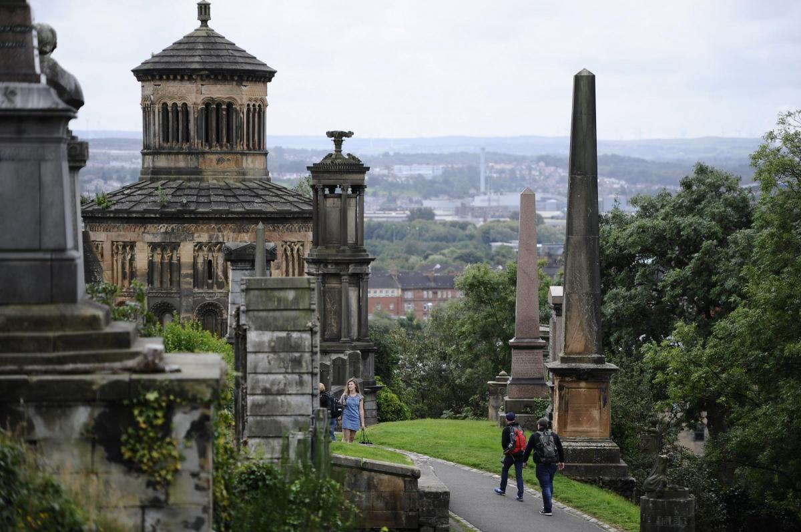
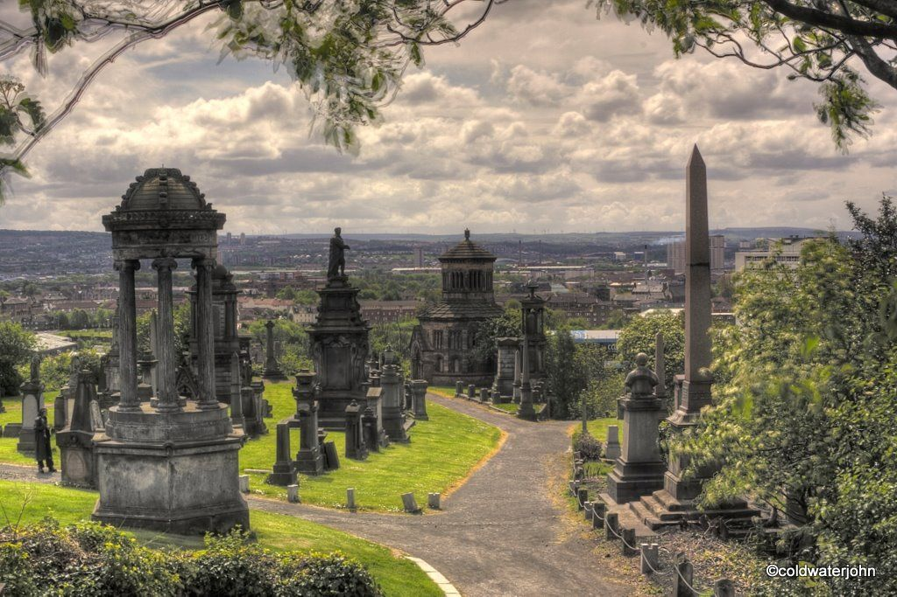

This is the University I attend. Established in 1471, it is one of the oldest universities in the English-speaking world.


Located on a hill to the east of Glasgow Cathedral, this Victorian cemetery is a must-see for history buffs.
 